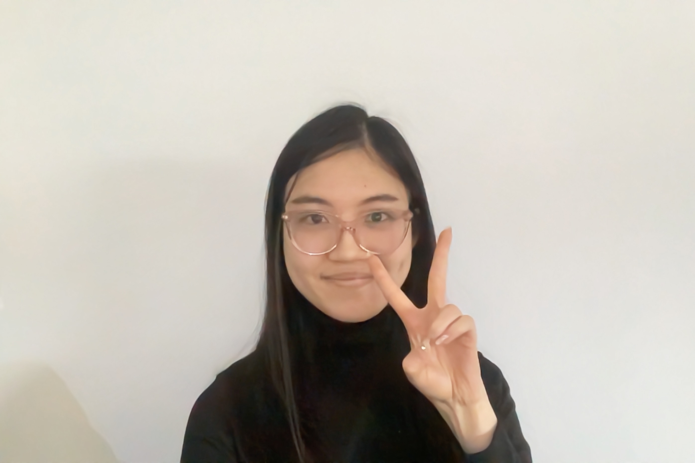

What music do you like to listen to while working?
pop music. Keshi. It's calm. I don't like to listen to music without lyrics but I don't like to listen to something that's too heavy that I focus too much on the music rather than what i'm doing.
Name three designers whose work you find inspiring.
Name something (a format, an item) you want to learn how to design but haven't had the chance to try out yet.
A font. Script font.
If you were a font, you'd be (you can't say helvetica or comic sans-- both jokes are played). Explain why?
A font with both Mandarin and English because I'm Chinese.
Name one website that you rely on (try to avoid a platform like google/amazon/pinterest/etc).
Stardew Valley Wiki - The game doesnt have a tutorial and it's so packed with stuff that I use the site to explore.
Now that you're in second year, what's different about graphic design from what you thought it was going in?
I thought it was just making things look good. In first year, I was telling one of my profs that and he said "you have to have a reason for your decisions." That design isn't just making things look good, you should make something that makes people think.
